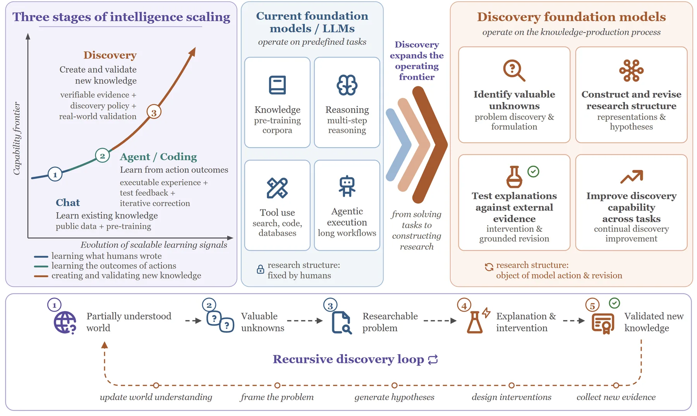

ICLR 2027 Workshop Proposal
Discovery Foundation ModelsFrom Solving Problems to Discovering Knowledge
29 or 30 April 2027
San Francisco
A proposed full-day, in-person workshop. One of two candidate days; the day is not fixed. ICLR 2027 workshops are held in person.
Status
This is a workshop proposal under review. It has not been accepted, and submissions are not open. There is no submission link and no call for papers to answer. The dates, the schedule, and every speaker’s participation on this page are conditional on the proposal being accepted.
Overview
Foundation-model systems that take part in creating and validating new knowledge
How can foundation-model systems move from solving the problems we give them to deciding what is worth discovering, testing explanations against evidence they cannot rewrite, and becoming better discoverers over time?
The central question of the proposal.
What foundation models learn from
Foundation models have advanced in stages, each defined by what they learn from. They first learned from what humans wrote: large-scale pretraining turned them into broad stores of existing knowledge. They then began to learn from the outcomes of their own actions: reasoning, tool use, code execution, and agentic workflows driven by verifiable feedback.
In science, the same capabilities now support protein structure prediction, materials discovery, and weather forecasting, and AI co-scientists, AI-scientist systems, and self-driving laboratories increasingly connect model-generated hypotheses to experiments, mostly within goals and setups that people have chosen. This workshop asks what the next step looks like: foundation-model systems that take part in creating and validating new knowledge.

The ceiling: a research structure fixed by humans
Most current systems, however capable, begin from a research structure that people have already chosen, namely the problem, its representation, the objective, the tools, and the evaluator, and they search for a solution inside it. The limitation is not a lack of scientific knowledge or reasoning. Most training and evaluation pipelines reward competence only after this structure has been fixed, and more competence inside the structure does not by itself repair it.
A fixed representation cannot express a variable it omits, so a persistent failure may reflect a missing variable rather than a weak optimizer; a search objective cannot recover a property its evaluator ignores, so a benchmark can reward a proxy; and more samples cannot separate two mechanisms when the available observable does not distinguish them.
An automated workflow can therefore pursue a misframed question more efficiently without becoming any better at noticing the misframing. Scientific-agent evaluations make the gap visible: long research workflows run end to end while evidence integration and refutation-driven revision remain fragile. The stakes go beyond efficiency, because AI may already change which problems are pursued, not only how quickly they are solved.
From problem solving to discovery intelligence
We refer to the missing capability, changing the research structure itself rather than only working inside it, as discovery intelligence. In a discovery episode this structure is not fixed: the episode starts from a partially understood world and must produce both externally validated progress and a record of how the problem, representation, hypotheses, and evidence were revised.
Three transitions are still left to people:
- framing, turning observations and uncertainty into a problem worth pursuing;
- modeling, constructing the variables in which competing explanations become expressible and distinguishable;
- grounding and revision, choosing evidence that can change an explanation’s status and attributing failures to the right cause.
A Discovery Foundation Model (DFM) is a general-purpose model system that performs these transitions and becomes better at them: it finds what is worth discovering (identifying valuable unknowns, formulating researchable problems, constructing and revising representations, and forming testable explanations), tests those explanations against the world (designing informative interventions and revising from external evidence), and improves these operations across tasks and domains.
The term was introduced in a technical report by two of the organizers. The workshop treats it as an open research target, not as any particular system; AI co-scientists, self-driving laboratories, and equation and causal discovery all address parts of it and are in scope.
A DFM acts not on a fixed task but on an explicit, revisable research state: a linked record of the current problem, representation, hypotheses, evidence, and interventions, and of why each was revised. It is defined by what it can construct and revise, not by its architecture or degree of autonomy, and the unit that is evaluated and credited is the whole system, including its tools, validators, and human collaborators.
Why science
Science is where this capability can be learned and tested, because it is an environment that pushes back. Questions are underspecified, variables hidden, interventions costly, and outcomes delayed; above all, evidence arrives from experiments, simulations, and measurements that the model cannot rewrite after seeing the result.
These properties turn problem formulation, experiment design, failure attribution, and revision into observable decisions rather than qualities of a final answer, so they can be trained on directly and credited even when the outcome is negative.
Science also makes evaluator incompleteness visible. Benchmark leakage, simulator artifacts, and non-reproducible effects can all create apparent progress without stronger knowledge, so for a DFM the evaluator can itself become part of the research state when evidence suggests that it is misaligned. The same decisions arise in digital research, in simulators, and in physical laboratories; what changes across these settings is the cost and independence of the evidence.
Discovery is recursive
Validated findings update our understanding of the world and seed the next round of questions, and a discovery system can go further by revising its own skills, tools, simulators, memory, and evaluators. Self-improving agents that rewrite their own code and scaffolding, building on the theoretical Goedel machine, provide digital precedents.
Recursive scientific improvement carries a larger validation burden, because one update can change which problems are selected, which evidence is collected, and how success is judged: a benchmark generator that silently drops hard cases, or an evaluator that starts rewarding internal agreement, can make measured performance rise while real discovery ability narrows.
The near-term question is therefore not unrestricted autonomy, but whether bounded, reversible changes to a discovery system yield repeatable gains under external validation. Each change should meet the same evidential standard as the hypotheses it serves, and the independent checks that decide whether a change is kept should stay outside self-modification, even when the evaluators used inside an investigation are open to revision.
The find, test and improve agenda
The workshop organizes this question into a unified agenda for systems that find, test, and improve: find what is worth discovering (framing and modeling), test explanations against the world (grounding and revision), and improve the discovery process itself (learning and recursion). The challenges, topics, and program below follow this order.
Two dedicated tracks, Open Discovery Problems and Negative Results and Failure Analyses, bring problem owners from the sciences and well-attributed failures into the program, and a closing panel debates the questions this agenda leaves open. By bringing these communities together, we aim to help shape a roadmap toward AI systems that discover rather than only solve.
Paradigms
The table below contrasts DFMs with the scientific-AI paradigms they build on
Six capability columns. On a narrow screen the table scrolls sideways while the paradigm name stays in place; it is also reachable and scrollable from the keyboard.
| Paradigm | Problem source | Representation change | Intervention design | Problem revision | External grounding | Skill transfer |
|---|---|---|---|---|---|---|
| Foundation models for science | Given | Limited | External | Not defining | Data | Not defining |
| Scientific reasoning models | Given | Limited | Limited | Not defining | Tasks or verifiers | Not defining |
| Scientific agents and AI scientists | Often given | Optional | Often | Optional | Tools and environments | Usually task-specific |
| Search and evaluator systems | Given | Fixed | Domain dependent | Not defining | Evaluator | Not defining |
| Autonomous laboratories | Often given | Task defined | Required | Optional | Physical | Not defining |
| Discovery foundation models | Constructed | Required | Required* | Required | Required | Required |
Key challenges
We would like the workshop to make progress on five open problems
-
Find: framing and modeling
Can a system recognize from evidence that the question, variables, or evaluator it was given are inadequate, and build a formulation whose candidate explanations differ in mechanism rather than only in wording?
-
Test: discriminating evidence
How should a system choose experiments that can change the status of competing explanations under cost and risk, and attribute an unexpected outcome to theory, measurement, protocol, or confounding before deciding what to revise?
-
Improve: learning from dry-lab and wet-lab feedback
Dry-lab signals (simulations, learned predictors, and tests the system writes for itself) are cheap and dense but are proxies a policy can exploit; wet-lab measurements give stronger external grounding but are slow, costly, and delayed. How should training combine the two, and credit information gain and evidence-grounded revision rather than final success alone?
-
Improve: safe and verifiable recursion
Which parts of a discovery system may it modify, and how should validation, provenance, and rollback scale with how far an update’s effects reach?
-
Across the loop: evaluating the process
Final-answer scores cannot separate discovery from retrieval, leakage, or extra compute, and give no credit to a justified negative result. How can benchmarks credit the process, and separate progress in the current investigation from improvement in future discovery ability?
Topics of interest
Topics the proposed call for papers would cover. Submissions are not open
From the proposal: “The workshop encourages paper submissions on topics including:”
-
Problem Discovery and Formulation
Identifying valuable unknowns in residuals, contradictions, and failed replications; rejecting artifacts; and turning anomalies into bounded, testable problems.
-
Representation and Hypothesis Construction
Latent variables, changes of scale, and causal, symbolic, or programmatic reformulation; mechanistically distinct, falsifiable explanations.
-
Intervention Design and Evidence-Grounded Revision
Choosing experiments, simulations, and replications by their expected information, and updating whichever part of the research state is at fault.
-
Grounding Across Digital, Simulated, and Physical Worlds
Discovery in mathematics, code, and ML research; simulators and digital twins; and self-driving laboratories and dry-lab/wet-lab loops.
-
Learning to Discover
Research trajectories and interactive research environments, process supervision, reinforcement learning from scientific feedback that combines dry-lab and wet-lab signals, research world models that predict outcomes, costs, and risks before a physical test, curricula that move from simulation to physical experiments, and discovery skills that transfer across domains.
-
Recursive Discovery and Self-Improvement
Systems that revise their own discovery skills, tools, simulators, evaluators, and memory; bounded, versioned, reversible improvement validated on externally selected tasks.
-
Process-Centered Evaluation
Benchmarks that credit formulation, intervention, and revision rather than final answers alone, with controls for leakage and extra compute.
-
Epistemics, Governance, and Safety
Claim status and independent validation, provenance and auditability, scoped authority and human oversight, and dual-use concerns in autonomous science.
Submissions
The proposed call for papers. Nothing on this page is open for submission yet
Not open
Submissions are not open and there is no submission link. This section records what the proposal commits to if the workshop is accepted. The proposed call for papers and website launch is early December 2026.
Tracks and page limits
| Track | Page limit |
|---|---|
| Full papers | Up to 8 pages, following the ICLR 2027 template |
| Tiny papers | Up to 4 pages |
| Open Discovery Problems | Up to 2 pages |
| Negative Results and Failure Analyses | Up to 4 pages |
Two further tracks reflect the theme of the workshop: Open Discovery Problems (up to 2 pages), in which scientists describe an unsolved problem together with the data and validation conditions needed to attack it, and Negative Results and Failure Analyses (up to 4 pages), which treats a well-attributed failure of an AI-driven discovery attempt as a contribution.
The tiny paper track welcomes less-than-full-conference work, such as an implementation and evaluation of an unpublished but simple idea, a modest but self-contained theoretical result, a follow-up experiment or re-analysis of a published paper, or a fresh perspective on an existing publication, and is meant to broaden participation by students, early-career researchers, and domain scientists; as ICLR requires, tiny papers must be primarily human-authored.
Non-archival
The workshop is non-archival, and papers already published at an archival venue, including the ICLR 2027 main conference, are not eligible.
Encouraged author disclosure
Authors are encouraged, but not required, to state briefly which parts of the research structure were given and which the system constructed or revised, which evidence supports each claim, and where humans intervened.
Review process
Reviewing is double-blind on OpenReview, with at least three reviews per full paper and two per shorter submission; we expect 80–150 submissions and will recruit about 160 reviewers, so that no reviewer handles more than three papers even if every submission is a full paper, and each paper is assigned both ML and domain-science reviewers.
- Double-blind, on OpenReview.
- At least three reviews per full paper; two per shorter submission.
- Expected submissions: 80 to 150. Reviewers to recruit: about 160.
- No reviewer handles more than three papers.
- Every paper is assigned both an ML reviewer and a domain-science reviewer.
Conflicts of interest
No organizer handles a submission from their own organization; submissions from the organizers’ groups or PhAI Labs are handled by a senior program-committee member outside these groups and are not eligible for awards.
Use of AI systems
AI systems will not serve as authors or reviewers: AI-generated submissions will not be accepted, AI-assisted writing is permitted if clearly disclosed in accordance with the ICLR 2027 policy, and reviewers may not use AI tools to write their reviews or upload submissions to external AI services.
Acceptance volume and presentation
We expect to accept 40–60 papers. All accepted papers will be presented as posters, split by theme across the two poster sessions, with the strongest full and tiny papers selected for contributed talks, the strongest negative results for spotlights, and the strongest open problems for pitches; outstanding submissions are recognized in the closing awards session.
Proposed timeline
Proposed, not committed. Every date below depends on the proposal being accepted
To meet ICLR’s mandatory notification date of February 26, 2027, we propose the following timeline:
- Call for papers and website launch, with a reminder that authors need an OpenReview profile well before the deadline
- Workshop paper submission deadline
- ReviewingJanuary 30 to February 17, 2027
- Notification of acceptance, with accepted papers public on OpenReview and imported into iclr.cc
- Camera-ready deadline
- Schedule with opening and closing times on iclr.cc and talk titles public
- Schedule finalized in the ICLR organizer portal
- Workshop, in San FranciscoApril 29 or 30, 2027
February 26, 2027 is ICLR’s own mandatory notification date, not this workshop’s. The proposal’s notification milestone is February 24, 2027, two days earlier. No timezone is given for any deadline.
Programme
A proposed programme. The workshop has not been accepted and nothing here is booked
Format
We propose a full-day, in-person workshop combining invited talks, contributed presentations, posters, and a panel debate to balance intellectual depth with structured interaction. The program will feature eight invited talks, four contributed talks, three spotlights from the Negative Results and Failure Analyses track, a pitch session for the Open Discovery Problems track, two 1-hour poster sessions integrated with coffee breaks, and a closing panel debate with four of the invited speakers. The invited talks follow the agenda: find in the morning, test in the early afternoon, and improve in the late afternoon. In total, the poster sessions, problem pitches, and panel debate give about three hours of structured interaction. An awards session will conclude the workshop.
- 8 invited talks.
- 4 contributed talks, 10 minutes each.
- 3 spotlights from the Negative Results and Failure Analyses track.
- 1 pitch session for the Open Discovery Problems track.
- 2 one-hour poster sessions, integrated with coffee breaks.
- 1 closing panel debate with four of the invited speakers.
- About 3 hours of structured interaction in total, and an awards session to conclude.
The closing panel debate
The workshop closes with a panel of four invited speakers, van der Schaar, Stanley, Dieng, and Liu, organized around three questions on which we expect them to disagree: how far a discovery system should be allowed to revise its own evaluator, and what must stay outside its self-modification; whether many automated runs are stronger evidence of discovery ability than a few well-audited investigations; and how credit for a discovery should be divided between the model and the humans, tools, and laboratories around it. The panel is moderated by one of the organizers, who also take audience questions; organizers give no talks at the workshop.
The three questions, in full:
- How far a discovery system should be allowed to revise its own evaluator, and what must stay outside its self-modification.
- Whether many automated runs are stronger evidence of discovery ability than a few well-audited investigations.
- How credit for a discovery should be divided between the model and the humans, tools, and laboratories around it.
Conditional on acceptance
The four panelists are drawn from the invited speakers. Each has confirmed tentative interest in participating if the workshop is accepted; none is a confirmed participant. The moderator is not named in the proposal. Questions for the panel will also be collected through an online form during the day; no form address exists yet.
Awards
We will present up to three awards: Best Paper, Best Open Discovery Problem, and Best Grounded Discovery, the last for the submission whose claims rest most convincingly on evidence the system cannot rewrite, such as wet-lab experiments, independent replication, or hidden-test and held-out validation in digital settings, whether the outcome confirms or refutes the original hypothesis. Winners are presented in the contributed talks, spotlights, or pitches.
Up to three is a ceiling, not a promise. The proposal names no prize amounts.
Tentative schedule
A tentative schedule. None of these slots is booked
| Activity Type | Time |
|---|---|
| Opening Remarks | 8:30–8:40 |
| Invited Talk 1: Kenneth Stanley | 8:40–9:10 |
| Invited Talk 2: Adji Bousso Dieng | 9:10–9:40 |
| Coffee Break & Poster Session I | 9:40–10:40 |
| Invited Talk 3: Heng Ji | 10:40–11:10 |
| Invited Talk 4: Zhiyuan Liu | 11:10–11:40 |
| Open Discovery Problems Pitches | 11:40–12:00 |
| Lunch | 12:00–13:00 |
| Invited Talk 5: Chang Ma | 13:00–13:30 |
| Invited Talk 6: Yatao Bian | 13:30–14:00 |
| Invited Talk 7: Mihaela van der Schaar | 14:00–14:30 |
| Contributed Talks (10 min each) | 14:30–15:10 |
| Coffee Break & Poster Session II | 15:10–16:10 |
| Invited Talk 8: Jeff Clune | 16:10–16:40 |
| Negative Results Spotlights | 16:40–17:10 |
| Panel Debate | 17:10–17:50 |
| Awards and Closing Remarks | 17:50–18:00 |
Invited speakers
Tentative interest, conditional on the workshop being accepted. No talk is confirmed
Read this first
No speaker on this programme is confirmed. In the proposal’s own words: “Each invitee listed below has confirmed tentative interest in participating if the workshop is accepted …” That is less than a confirmed talk. The talk numbers and slots below are a proposed programme, not bookings, and no talk has a title yet.
-
Kenneth Stanley
Tentative interest, conditional on acceptance
Lila Sciences
Proposed Talk 1, find. On the closing panel
Stanley is Senior Vice President of Open-Endedness at Lila Sciences, where Stanley leads work on continual, open-ended discovery and tests open-ended search algorithms with Lila’s physical laboratories on problems in materials science, therapeutics, and chemistry. Stanley created the NEAT neuroevolution algorithm and novelty search, previously led the Open-Endedness team at OpenAI, and co-founded Geometric Intelligence, which became Uber AI Labs. Stanley co-authored Why Greatness Cannot Be Planned: The Myth of the Objective.
-
Adji Bousso Dieng
Tentative interest, conditional on acceptance
Princeton University
Proposed Talk 2, find. On the closing panel
Dieng is an Assistant Professor of Computer Science at Princeton University, where Dieng leads the Vertaix lab at the intersection of artificial intelligence and the natural sciences, with associated appointments including Chemical and Biological Engineering and the Princeton Materials Institute; Dieng was a research scientist at Google DeepMind from 2020 to 2025. Dieng’s work on Vendi scores measures diversity in machine learning and uses it to drive experimental design toward unexplored regions, including quality-weighted Vendi scores for diverse experimental design (ICML 2024). Dieng’s NSF CAREER project develops what Dieng calls “investigative intelligence” for scientific discovery.
-
Heng Ji
Tentative interest, conditional on acceptance
University of Illinois Urbana-Champaign
Proposed Talk 3, find
Ji is a Professor of Computer Science in the Siebel School of Computing and Data Science at the University of Illinois Urbana-Champaign, where Ji is the founding director of the Amazon-Illinois Center on AI for Interactive Conversational Experiences and the Capital One-Illinois Center on AI Safety and Knowledge Systems. Ji was named an ACL Fellow in 2025 for contributions to information extraction, multimodal and multilingual knowledge extraction, and AI for science, and is a co-author of SciMON, which generates scientific ideas optimized for novelty against the literature. Ji’s honors include outstanding paper awards at ACL 2024 and NAACL 2024 and an NSF CAREER Award.
-
Zhiyuan Liu
Tentative interest, conditional on acceptance
National University of Singapore
Proposed Talk 4, find. On the closing panel
Liu is a Postdoctoral Research Fellow at the National University of Singapore, working with Yang Zhang in the School of Computing. Liu’s research on AI for science develops multimodal generative models that connect language with small molecules, proteins, RNA, and single-cell data, including MolCA (EMNLP 2023), 3D molecule-text interpretation in language models (ICLR 2024), ProtT3 for protein-to-text generation (ACL 2024), and NExT-Mol for 3D molecule generation (ICLR 2025). Liu also co-developed clawRxiv (2026), a venue that accepts research papers written by AI agents.
-
Chang Ma
Tentative interest, conditional on acceptance
University of Washington
Proposed Talk 5, test
Ma is a Postdoctoral Researcher at the University of Washington, co-advised by Pang Wei Koh and Hanna Hajishirzi, and received a Ph.D. in Computer Science from the University of Hong Kong in 2026. Ma’s research develops autonomous, efficient, and trustworthy agents with a long-term focus on scientific discovery, including Orion, which uses computer-using agents to automate laboratory workflows, ScienceBoard (ICLR 2026), which evaluates multimodal agents in realistic scientific workflows, and BioMaze for biological pathway reasoning. Earlier work includes the PEER benchmark for protein sequence understanding (NeurIPS 2022) and the GIMLET graph-text model for molecules (NeurIPS 2023).
-
Yatao Bian
Tentative interest, conditional on acceptance
National University of Singapore
Proposed Talk 6, test
Bian is an Assistant Professor of Computer Science at the National University of Singapore and a Singapore National Research Foundation Fellow (Class of 2026), with a Fellowship project on reasoning-empowered foundation models for atomic systems. Bian’s research on AI for scientific discovery spans energy- and entropy-based learning, reasoning-capable scientific foundation models, and LLMs and agents for science and their safety. Bian received a Ph.D. from ETH Zurich, was an Associate Fellow of the Max Planck ETH Center for Learning Systems, was named a Microsoft Research Asia StarTrack Scholar in 2026, and serves as an area chair for ICML, NeurIPS, and ICLR.
-
Mihaela van der Schaar
Tentative interest, conditional on acceptance
University of Cambridge; Francis Crick Institute
Proposed Talk 7, test. On the closing panel
Van der Schaar is the John Humphrey Plummer Professor of Machine Learning, Artificial Intelligence and Medicine at the University of Cambridge, founder and director of the Cambridge Centre for AI in Medicine, and, since 2026, Chief AI Scientist at the Francis Crick Institute. Van der Schaar’s lab studies AI agents that uncover scientific structure, including networks of research agents and human experts that jointly generate, critique, and refine hypotheses. Van der Schaar is a Fellow of the Royal Society and an IEEE Fellow.
-
Jeff Clune
Tentative interest, conditional on acceptance
University of British Columbia; Vector Institute; Recursive
Proposed Talk 8, improve
Clune is a Professor of Computer Science at the University of British Columbia, a Canada CIFAR AI Chair at the Vector Institute, and a co-founder of Recursive, which builds self-improving AI systems that start with AI research and then turn to scientific domains. Clune is a co-author of Towards End-to-End Automation of AI Research (Nature, 2026), which describes The AI Scientist, and of the Darwin Goedel Machine, a self-improving coding agent. Clune previously held roles at DeepMind, OpenAI, and Uber AI Labs.
Why these speakers
Each speaker’s work is a building block of the agenda, and the invited talks follow the find-test-improve order of the day. Stanley opens find with open-ended search for what is worth discovering, now tested with Lila Sciences’ physical laboratories. Dieng follows with Vendi scores and diversity-driven experimental design, which steer molecular and materials discovery toward unexplored regions. Ji brings SciMON, which generates scientific ideas and optimizes them for novelty against the literature. Liu closes find with multimodal generative models that connect language with molecules and proteins, and with clawRxiv, which raises the question of how research written by AI agents should be judged.
In test, Ma builds computer-using agents that run laboratory workflows (Orion) and benchmarks that check how well agents carry out real scientific work (ScienceBoard). Bian builds reasoning-capable foundation models for atomic systems and LLM agents for science, which tie a model’s reasoning to physical structure. Van der Schaar, whose lab studies networks of research agents and human experts that jointly generate, critique, and refine hypotheses, speaks to how explanations are revised against evidence and how credit is divided between the model and the people around it. Clune closes the invited talks and anchors improve with The AI Scientist and the Darwin Goedel Machine.
Track distribution of the eight proposed talks
| Track | Talks | Speakers |
|---|---|---|
| find, morning | 1 to 4 | Stanley, Dieng, Ji, Liu |
| test, early afternoon | 5 to 7 | Ma, Bian, van der Schaar |
| improve, late afternoon | 8 | Clune |
Organizers
Four organizers and three senior organizers, from seven institutions
ICLR 2027 allows at most eight people in organizing roles, including senior organizers. Our team has four organizers and three senior organizers. The four organizers run day-to-day operations (website, OpenReview and reviewing, and communication with speakers and authors); the senior organizers shape the scope and help recruit domain-science reviewers and problem owners, and organizers attending in person chair the sessions. If an organizer cannot travel, an attending organizer covers their sessions.
As a team, the organizers have run more than ten workshop editions at ICML, ICLR, ICCV, CVPR, and COLM, including Lifelong Agents at ICLR 2026 (main organizer Qian; more than 250 submissions), and include a program chair of ICLR 2023 (Wang). Organizers give no talks at the workshop.
Organizers
-
Zhaochen Yu
National University of Singapore; PhAI Labs
Yu is a Ph.D. student at the National University of Singapore, advised by Shuicheng Yan. Yu’s research covers reasoning and agentic reinforcement learning for LLMs and recursive self-improvement of agent harnesses, with representative works including Buffer of Thoughts (NeurIPS 2024 spotlight), SuperCorrect (ICLR 2025), ReasonFlux, and Recuris. Yu has reviewed for NeurIPS, ICLR, ICML, AISTATS, and AAAI.
-
Zhenfei Yin
PhAI Labs; University of Oxford; Shanghai Innovation Institute
Yin is an incoming assistant professor at the Shanghai Innovation Institute, a postdoctoral researcher at the University of Oxford working with Philip Torr, and a co-founder of PhAI Labs. Yin’s interests include multimodal learning, AI agents, multi-agent systems, embodied agents, and AI for science. Yin has organized TiFA and Multi-modal Foundation Model meets Embodied AI at ICML 2024, Multi-Agent Systems in the Era of Foundation Models at ICML 2025, Multi-Modal Reasoning for Agentic Intelligence at ICCV 2025 and CVPR 2026, and Lifelong Agents at ICLR 2026 and COLM 2026.
-
Ling Yang
PhAI Labs; Princeton University; Peking University
Yang is an incoming assistant professor at Peking University, a postdoctoral researcher at Princeton University working with Mengdi Wang, and a co-founder of PhAI Labs. Yang’s research covers post-training of LLMs and agents, reinforcement learning systems, recursive self-improvement, and discovery intelligence, with representative works including Buffer of Thoughts (NeurIPS 2024 spotlight), the ReasonFlux series, and RLAnything (ICML 2026). Yang built the Gen-Verse open-source community, received the 2026 WAIC Yunfan Award, and is an area chair for ICML, ICLR, and NeurIPS.
-
Cheng Qian
University of Illinois Urbana-Champaign
Qian is a Ph.D. student at the University of Illinois Urbana-Champaign, advised by Heng Ji, and a Capital One ASKS Center Fellow. Qian’s research covers LLM agents, including tool use, reasoning, user alignment, and creativity, with representative works including CREATOR, ToolRL (NeurIPS 2025), and UserRL. Qian is the main organizer of Lifelong Agents at ICLR 2026 and COLM 2026 and has been an area chair for ACL Rolling Review.
Senior organizers
The senior organizers have shaped the theme and scope of the workshop, and their experience guides its vision, structure, and academic direction.
-
Philip Torr
University of Oxford
Torr is a Professor at the University of Oxford and holds the Five AI / Royal Academy of Engineering Research Chair in Computer Vision and Machine Learning. Torr’s accolades include the Marr Prize (1998), a Royal Society Wolfson Research Merit Award, and fellowships of both the Royal Academy of Engineering and the Royal Society, and Torr is a Turing AI World-Leading Researcher Fellow. Torr has co-organized many recent workshops, including Foundation Models in the Wild (ICML 2024, ICLR 2025) and Multi-Agent Systems in the Era of Foundation Models (ICML 2025).
-
Mengdi Wang
Princeton University
Wang is a Professor of Electrical and Computer Engineering and of the Center for Statistics and Machine Learning at Princeton University and Co-Director of Princeton AI for Accelerated Invention. Wang’s research spans reinforcement learning, generative AI, and AI for science, including agentic discovery systems such as CRISPR-GPT and LabOS. Wang was a Program Chair of ICLR 2023 and has co-organized workshops including MLGenX (ICLR 2025), Lifelong Agents (ICLR 2026), and AI for Science: AI Scientists (ICML 2026).
-
Shuicheng Yan
National University of Singapore
Yan is a Distinguished Professor (Practice Track) at the School of Computing, National University of Singapore, where Yan leads LV-Lab, and previously served as Group Chief Scientist at Sea Group. Yan is a Fellow of the Singapore Academy of Engineering, AAAI, ACM, IEEE, and IAPR, and Yan’s current research interests include efficient, executive, and evolving AI. Yan has published more than 800 papers and has been named a Highly Cited Researcher for ten years.
The organizers come from seven institutions in the United States, the United Kingdom, Singapore, and China, including a non-profit research organization (PhAI Labs), and span career stages from Ph.D. student through postdoctoral researcher and incoming assistant professor to full professor. Reviewing and awards rely on a program committee recruited well beyond the organizers’ own groups.
Other ICLR 2027 proposals
As the call requires, we disclose the other ICLR 2027 workshop proposals our organizers are helping to organize: Zhenfei Yin and Philip Torr are organizers of Scientific World Models: From Prediction to Intervention and Discovery, and Cheng Qian is an organizer of one other ICLR 2027 workshop proposal. Every organizer of this proposal is listed as an organizer on no more than two ICLR 2027 workshop proposals.
Participation and access
Who the workshop is for, how to take part without travelling, and who pays for what, if the proposal is accepted
Interaction and access
ICLR 2027 workshops are held in person. To engage those who cannot attend, invited talks and the panel will be recorded where ICLR provides recording and the speakers agree; otherwise we will post speaker-provided videos or slides on the workshop website. Accepted papers, posters, and slides will be posted on OpenReview and the workshop website, and talk titles will be public before the conference. Within four weeks of the workshop we will publish on the website the curated list of open discovery problems with their validation conditions, together with a short report on the panel debate. Authors or speakers who cannot travel, for example because of visa delays, can present through a pre-recorded video, with their poster displayed by an organizer; if an invited speaker withdraws, the slot goes to an additional contributed talk. Questions for the panel will also be collected through an online form during the day.
Expected audience and outreach
We anticipate 150–200 sustained in-person participants, with peak attendance of 250–350. This estimate is based on comparable ICLR workshops and on the more than 250 submissions received by the ICLR 2026 Lifelong Agents workshop, co-organized by members of our team. We will promote the workshop through a dedicated website, social media, OpenReview, mailing lists in machine learning and in computational biology, chemistry, and materials science, and the organizers’ and speakers’ networks. For the Open Discovery Problems track, we will reach out directly to self-driving-laboratory consortia and domain-science communities, since real problem owners are what make the track useful.
Inclusion and broader engagement
A central part of our outreach is active engagement with affinity groups, including WiML, LatinX in AI, Black in AI, Queer in AI, and {Dis}Ability in AI, as well as universities in the San Francisco Bay Area. We will host mentoring tables at lunch, open at least one contributed talk to the tiny paper track, and invite students to join the program committee as reviewers paired with senior reviewers.
In inviting speakers the organizers drew on a candidate list that includes researchers from groups underrepresented in machine learning, and they will give priority to gender balance and to these groups if the speaker list changes after acceptance and when recruiting the program committee. Access measures named in the proposal are online materials, pre-recorded presentations for those who cannot travel, the tiny paper track, and the allocation of complimentary registrations to students and early-career authors.
Funding support
The awards and student travel grants will be funded by PhAI Labs, a non-profit research organization co-founded by two of the organizers; as stated above, submissions from PhAI Labs are not eligible for awards. ICLR provides four complimentary registrations per workshop, which we will allocate to students and early-career authors from under-resourced institutions.
Both halves of this commitment travel together: PhAI Labs funds the awards, and PhAI Labs submissions cannot win them. The proposal names no prize or grant amounts and no other sponsor.
Significance and related work
Why now, what is already covered elsewhere, and what this workshop would add
Why this workshop is timely
This is the first edition of the workshop. The building blocks of AI-driven discovery now exist: AI-scientist systems with peer-reviewed demonstrations, autonomous laboratories, and early dry-lab/wet-lab loops in which physical results revise targets, assays, and mechanism hypotheses across rounds. As execution becomes automated, verification alone is not enough: it checks an answer against the question and evaluator it was given, and cannot tell when either is wrong. The central challenge is therefore no longer only whether AI systems can carry out research, but whether they can find what is worth researching, test it against evidence, and improve at doing so. The questions that remain (what the training signal for discovery is, what should be evaluated, and what transfers across domains) are learning questions, which makes ICLR the natural venue to address them in the open.
Related workshops
Several workshops have advanced adjacent parts of this agenda, including:
| Workshop | Editions |
|---|---|
| AI for Science | Most recently at ICML 2026, with a NeurIPS 2026 edition upcoming |
| Foundation Models for Science | NeurIPS 2024, ICLR 2026 |
| Towards Agentic AI for Science | ICLR 2025 |
| GEM | ICLR 2024 to 2026 |
| AI4Mat | ICLR 2025 to 2026 |
| Self-Improving Foundation Models Without Human Supervision | ICLR 2025 |
| AI with Recursive Self-Improvement | ICLR 2026 |
| Reinforcement Learning from World Feedback | ICML 2026 |
| Lifelong Agents | ICLR 2026, COLM 2026, which several of us organize |
How this workshop differs
The AI for Science and Foundation Models for Science series have also posted pages for ICLR 2027 editions, and both overlap with parts of our agenda: the former centers on the infrastructure of AI scientists (workbenches, orchestration, and evaluators for hypothesis-experiment-observation loops), with a self-improvement competition that uses existing data and knowledge as feedback without requiring new experiments, and the latter on foundation-model agents that formulate and revise hypotheses and choose tool-mediated actions. Neither centers the model’s own ability to find and formulate problems and to revise its research representation, nor accepts recursive improvement only on new external evidence.
Workshops centered on world models, including a concurrent ICLR 2027 proposal on scientific world models that two of our organizers co-organize, treat predictive models of the world as the object of study; for us a research world model is one component of a discovery loop whose problem, representation, and evaluator are themselves revised from evidence.
Our workshop differs by treating hypothesis generation, autonomous laboratories, and self-improvement not as separate themes but as parts of one discovery loop over a revisable research state, and by asking how they interact: how the framing of a problem fixes what counts as success, how cheap dry-lab proxies shape what a model learns to propose, and how a self-improving system can change the criteria by which its own progress is judged.
A revisable research structure
The workshop treats the research structure, evaluator included, as something the system revises from evidence.
Discovery as a trained capability
It asks how discovery can be trained and credited as a model capability.
Recursion on external evidence
And unlike previous self-improvement workshops, which treat science as one application among many, it studies recursive self-improvement in which an update is accepted only when new external evidence supports it.
To our knowledge, none of these workshops has offered tracks for open problems posed by scientists or for well-attributed failures.
Contact
One address, published by the proposal itself
The proposal also records a website address for the workshop: zhaochenyu0201.github.io/dfm-workshop/
Not yet announced
The proposal is deliberately silent on the following, and this page does not fill the gaps:
- A single workshop day. April 29 and 30, 2027 are both candidates; no venue, building, or room is named beyond San Francisco.
- Talk titles and abstracts. The proposed timeline makes talk titles public on March 26, 2027.
- The panel moderator, who is one of the organizers but is not named.
- An OpenReview submission address, a venue id, a template link, a reviewer sign-up form, and the address of the online form for panel questions.
- Prize and travel-grant amounts, grant counts, and eligibility criteria. Program-committee members, and the senior program-committee member who handles conflicted submissions.
- A mailing list, a social-media account, and any second contact address.